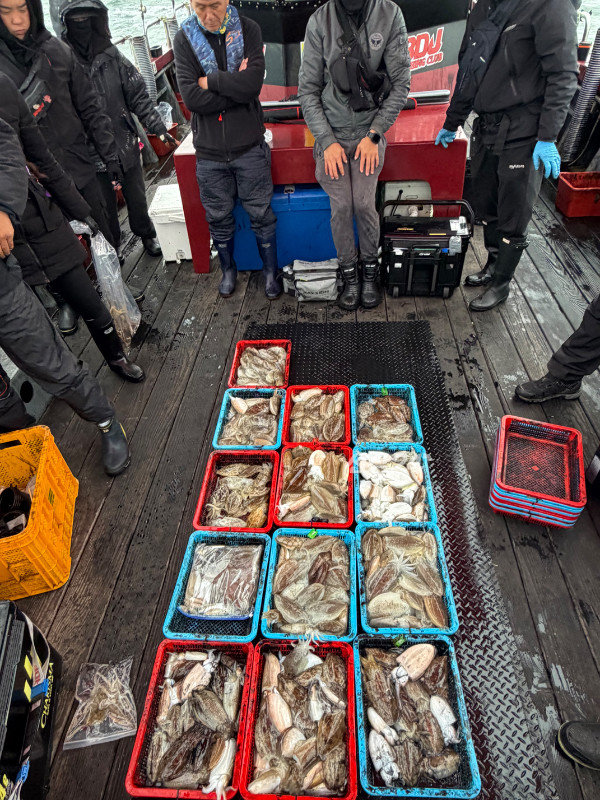
사진 2장2026-10-29 · 안흥 스페이스호
조황정보 HOME / 조황정보 / 조황상세
10월29일 안흥항 스페이스호 VIP좌석 출조 성공 하였습니다 안녕하세요 안흥항 스페이스호 입니다.금일은 황제낚시 출조를 해서 자리 간격이 3미터 편안한 낚시를 할수 있는 분위기에서 13분 모시고 출항을 하였습니다.중간중간 쉬면서 하신분들을 제외하고
가을 선상낚시의 핵심 어종인 갑오징어·주꾸미·문어를 중심으로 조황, 지역별 선박, 장비 선택 정보를 정리합니다.

사진 2장10월29일 안흥항 스페이스호 VIP좌석 출조 성공 하였습니다 안녕하세요 안흥항 스페이스호 입니다.금일은 황제낚시 출조를 해서 자리 간격이 3미터 편안한 낚시를 할수 있는 분위기에서 13분 모시고 출항을 하였습니다.중간중간 쉬면서 하신분들을 제외하고
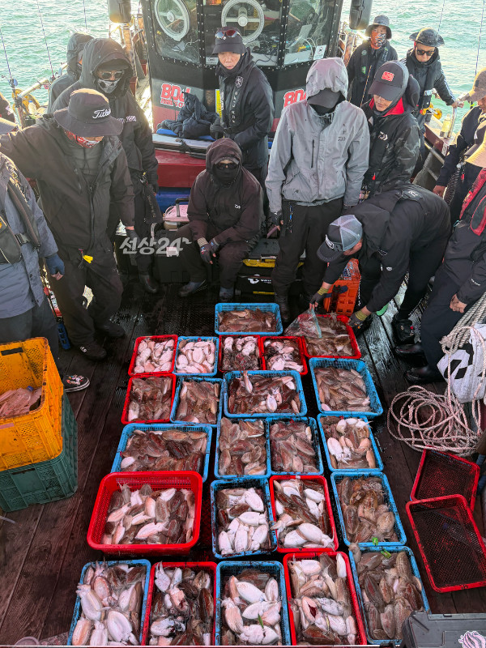
사진 2장10월 22일 안흥항 스페이스호 갑오징어 다시 시작인건가? 오늘은 올시즌 역대급 사이즈 마릿수 조황이 나온날 입니다.오늘의 조황은 협력선이자 협업선인 가가호 여명호 스페이스호가 만든 합작품 입니다.스페이스호는 19명 승산하는데 배에서 꼴찌가 47수면
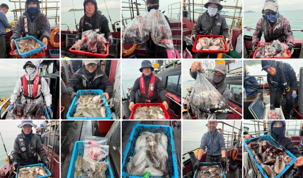
사진 14장안흥항 스페이스호 10월 20일 심해권사이즈 갑오징어가 수심 5미터에 드글드글 정말로 굿조황 입니다 10월 20일은 갑낙(갑오징어, 낙지)? 조황 입니다 갑오징어만 나오던 포인트에 낙지가 점령해서 갑오징어 낙지 5:5로 나오는 희기한 장면을 목격했습
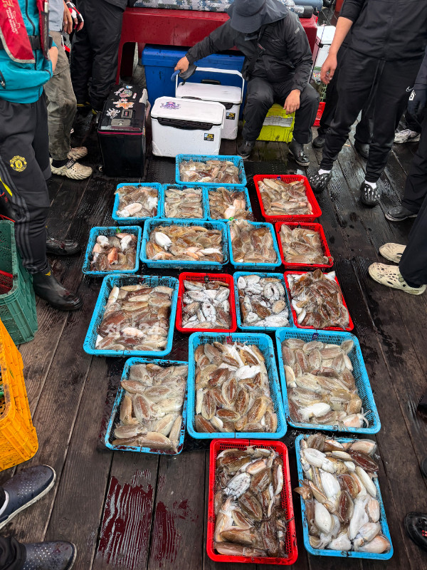
사진 4장10월19일 태풍급 너울도 이겨버리는 스페이스호 조황 태풍급 바람뒤에 힘찬 너울사이에서 스페이스호는 열심히 합니다 스페이스호는 골고루 넉넉히 잡아드립니다.조사님들이 스페이스호를 찾는 이유 입니다 *** 안흥 스페이스호 예약 안내 ***예약문의 : 01
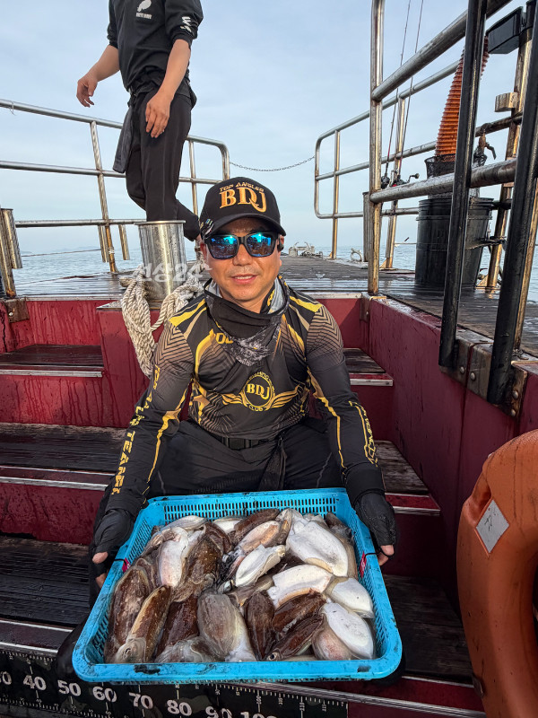
사진 3장10월17일 안흥항 스페이스호 갑오징어 굿조황 스페이스호는 골고루 넉넉히 잡아드립니다.조사님들이 스페이스호를 찾는 이유 입니다 *** 안흥 스페이스호 예약 안내 ***예약문의 : 010-3452-2718오시는길 : 충남 태안군 근흥면 안흥1길 32홈페
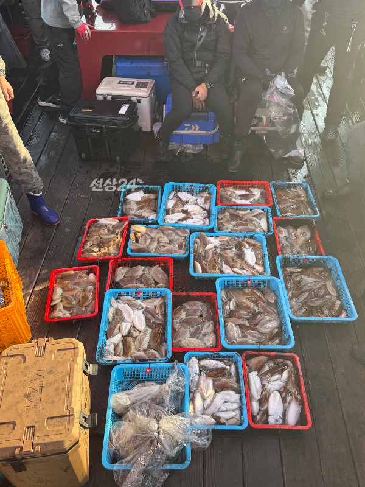
사진 5장10월 16일 흑도권 사이즈굿 갑오징어 조황 입니다 사릿물에 강제휴식을 하면서 출조를 위해 열심히 일하고 출항을 했습니다.너울이 찾아주신 조사님들을 괴롭혔지만 오늘 출조하신 조사님들을 열정에 GG를 쳤습니다.스페이스호 내년 쭈갑 예약 오픈일은 2월2일
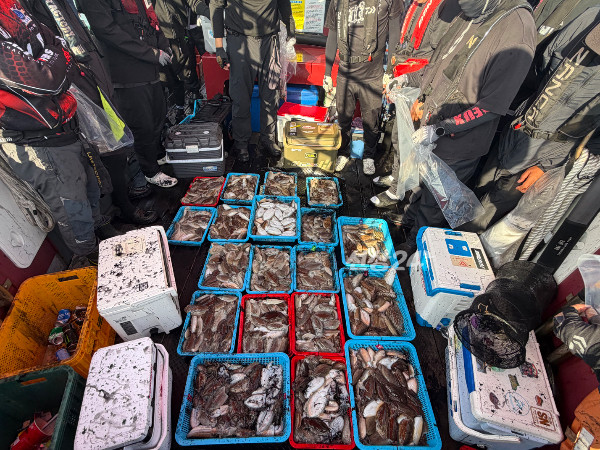
사진 2장10월10일 사릿물때 좋은 마릿수 조황입니다 사릿물때 평균 마릿수가 좋은 하루였습니다.사릿물때 밑고 예약해해주세요*** 안흥 스페이스호 예약 안내 ***예약문의 : 010-3452-2718오시는길 : 충남 태안군 근흥면 안흥1길 32홈페이지 : htt
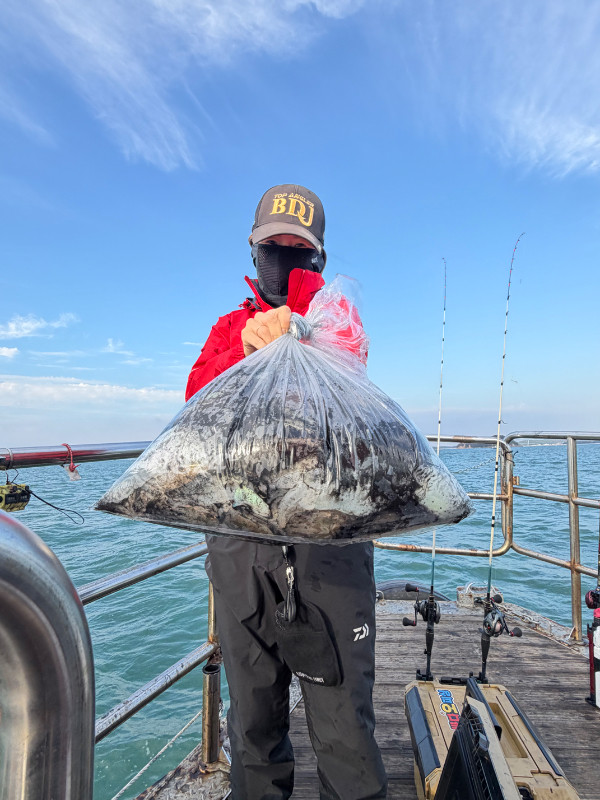
사진 7장10월9일 갑오징어 초대박 조황 입니다 사릿물때 평균 마릿수가 좋은 하루였습니다.*** 안흥 스페이스호 예약 안내 ***예약문의 : 010-3452-2718오시는길 : 충남 태안군 근흥면 안흥1길 32홈페이지 : https://spaceho.sunsa
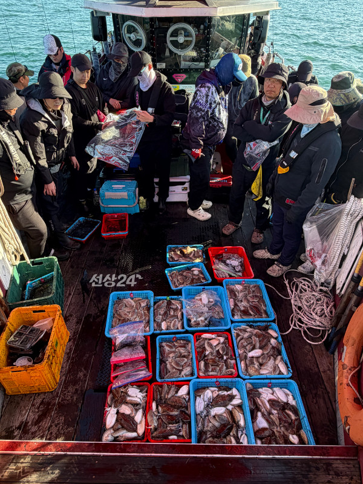
사진 3장10월8일 스페이스호 갑오징어 조황 입니다 사이즈 좋은 갑오징어가 낮은수심에서 잘나옵니다..*** 안흥 스페이스호 예약 안내 ***예약문의 : 010-3452-2718오시는길 : 충남 태안군 근흥면 안흥1길 32홈페이지 : https://spaceho
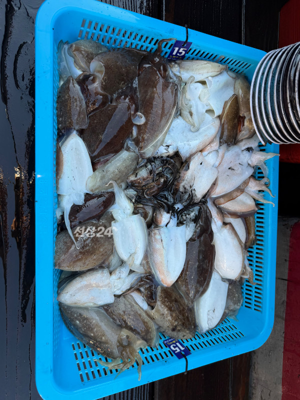
사진 3장10월 7일 스페이스호 거짓말 이라고 해도 믿을 만큼 대박조황 거짓 같지만 진짜 조황 입니다.바구니 한개가 부족해서 두개 쓰신 조사님들이 많았습니다.*** 안흥 스페이스호 예약 안내 ***예약문의 : 010-3452-2718오시는길 : 충남 태안군 근
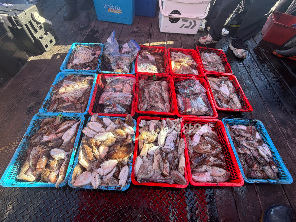
사진 3장10월6일스페이스호 갑오징어 조황 안흥 신진도권 잘나옵니다 스페이스호 썬캡 믿고 예약해주세요*** 안흥 스페이스호 예약 안내 ***예약문의 : 010-3452-2718오시는길 : 충남 태안군 근흥면 안흥1길 32홈페이지 : https://spaceho
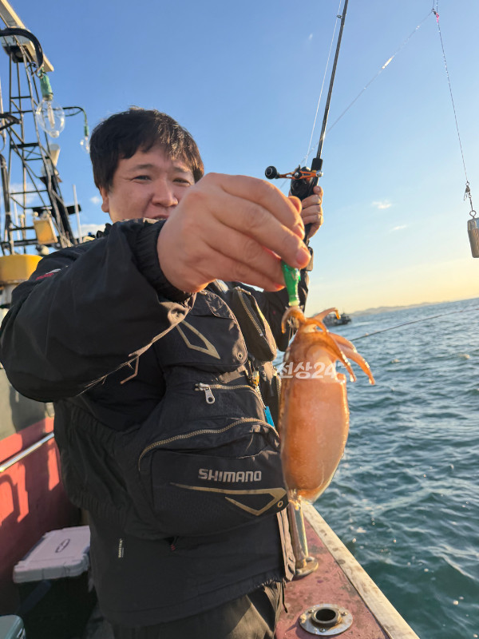
사진 11장10월2일 안흥항 스페이스호 안흥 신진도권 갑오징어 조황 입니다. 안녕하세요 스페이스호 입니다.오늘은 첫포인트로 안흥 신진도권을 잡고 출항을 하였습니다.사이즈 좋은 안흥 신진도권 갑오징어들이 줄줄이 나오는 관경을 여러번 목격을 하였습니다.사이즈 좋은
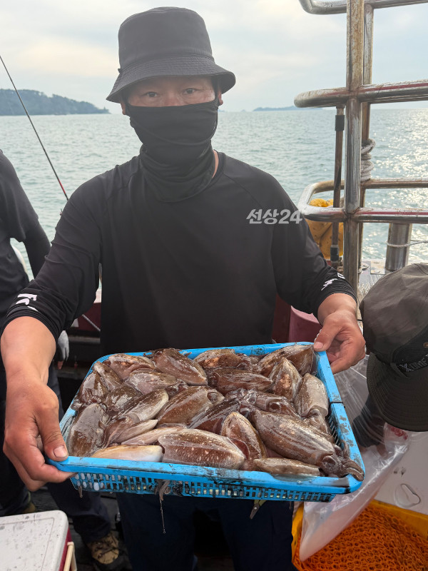
사진 9장스페이스호 9월27일 싸이즈굿 하루에 세번 찾아온 피딩타임 굿 조황입니다 안흥 신진도권 협업선인 여명호, 라온호, 가가호, 스페이스호가 태안권 여기저기 돌아다니면서 만들어낸 요즘 시즌 보기힘든 사이즈로 굿조황 및 피딩타임 9연타 10연타를 하는 느나느
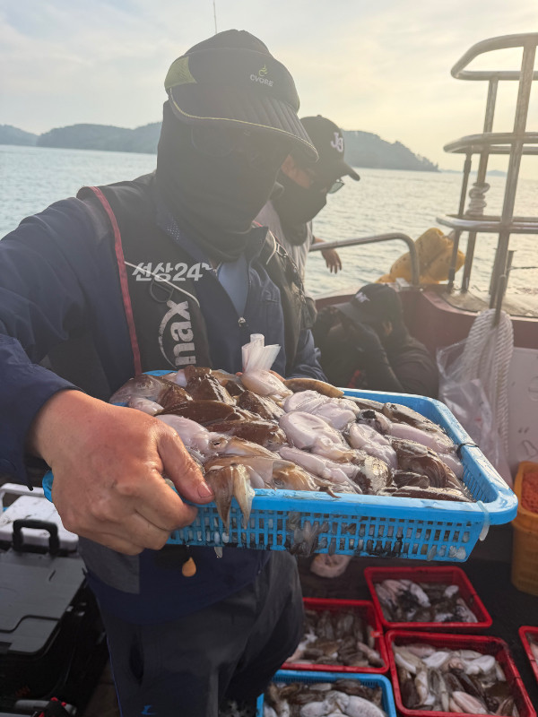
사진 9장9월26일 스페이스호 갑오징어 조황입니다 안흥 신진도권 갑오징어가 사막을 열었습니다 *** 안흥 스페이스호 예약 안내 ***예약문의 : 010-3452-2718오시는길 : 충남 태안군 근흥면 안흥1길 32홈페이지 : https://spaceho.sun
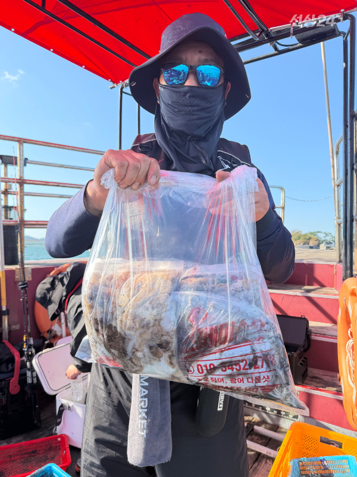
사진 5장9월20일 스페이스호 주꾸미 굿 조황입니다 여밭에 주꾸미가 대박 엄청 많이 입성을 했습니다 *** 안흥 스페이스호 예약 안내 ***예약문의 : 010-3452-2718오시는길 : 충남 태안군 근흥면 안흥1길 32홈페이지 : https://spaceho
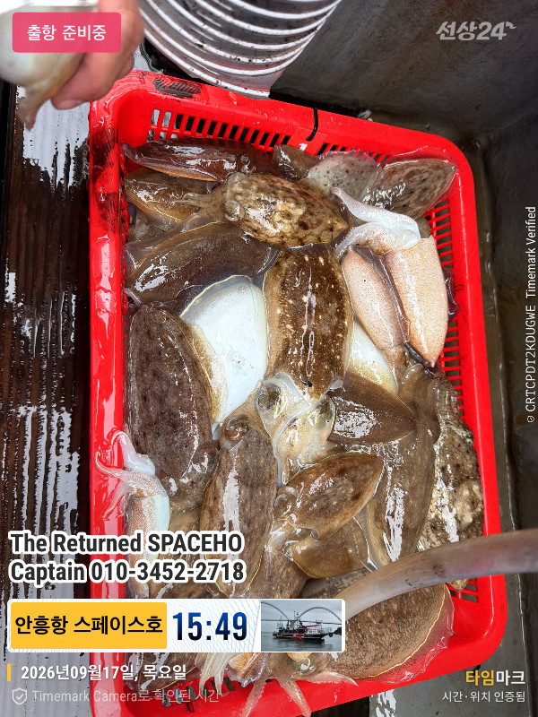
사진 15장9월17일 안흥항 스페이스호 100갑 조황 입니다 오늘 14분의 조사님을 모시고 가고 싶었던 필드로 다녀왔습니다.급 출조모집에 찾아주신 조사님들 감사드립니다.덕분에 바다에 다녀올수 있었습니다~꾸벅시즌을 늦게 오픈해서 빈자리가 많습니다.스페이스호를 찾아
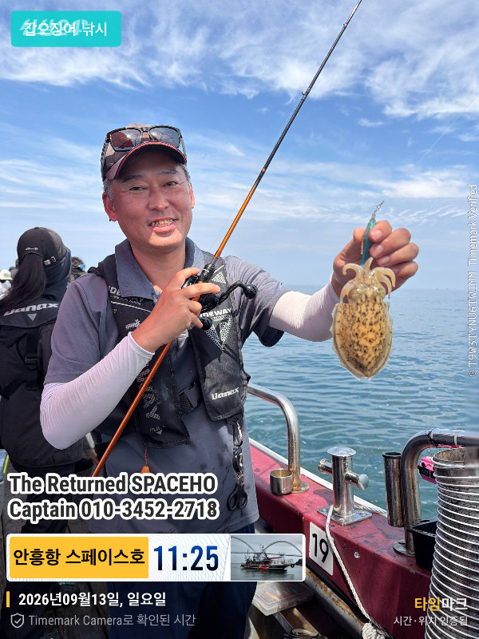
사진 11장스페이스호 9월13일 갑오징어 조황 입니다 바다가 왜 그런데요??매일 열심히 하는데 매일 매일 다른 조황을 주네요오늘은 정말로 어제 찾아주신 분들께 죄송한 조황 입니다늦은 시간에 포인트 진입 했는데 최고 90수 평균 60수로 마무리 했습니다.. 찾아주
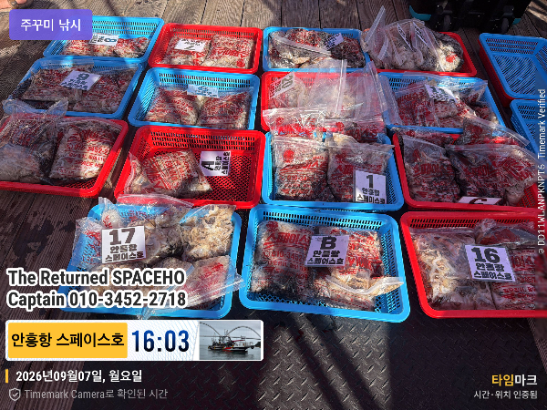
사진 2장9월7일 스페이스호 쭈꾸미낚시 조황 평균 머릿수와 사이즈가 좋아지고 있습니다 *** 안흥 스페이스호 예약 안내 ***예약문의 : 010-3452-2718오시는길 : 충남 태안군 근흥면 안흥1길 32홈페이지 : https://spaceho.sunsang
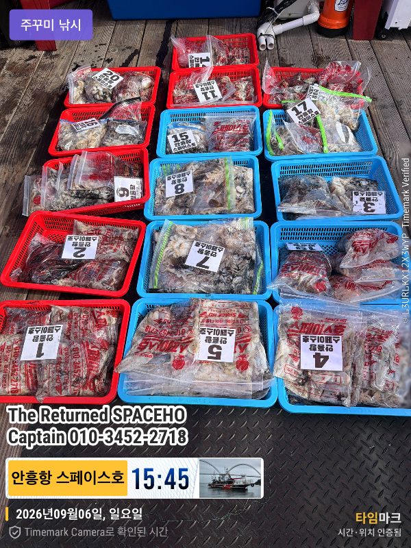
사진 2장스페이스호 9월6일 쭈꾸미낚시 조황 1등 300여수 평균200여수조황이 점점 살아나고 평균 머릿수도 좋아지고 있습니다 *** 안흥 스페이스호 예약 안내 ***예약문의 : 010-3452-2718오시는길 : 충남 태안군 근흥면 안흥1길 32홈페이지 :
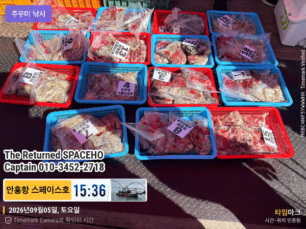
사진 2장스페이스호 9월5일 주꾸미낚시 조황 장원 312수 평균 170수점점 살아납니다*** 안흥 스페이스호 예약 안내 ***예약문의 : 010-3452-2718오시는길 : 충남 태안군 근흥면 안흥1길 32홈페이지 : https://spaceho.sunsang
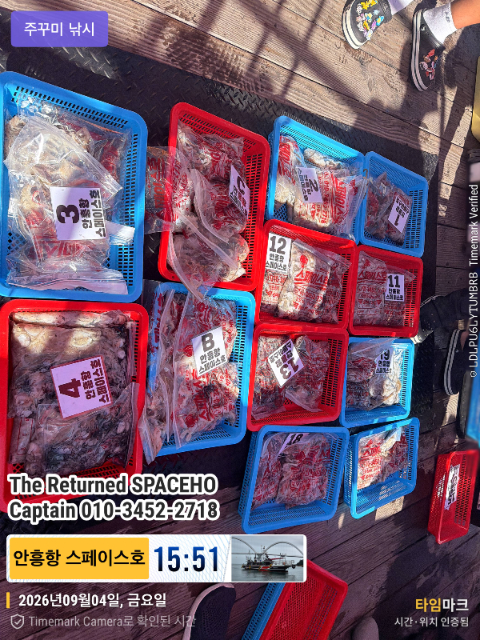
사진 4장스페이스호 9월4일 주꾸미낚시 조황 *** 안흥 스페이스호 예약 안내 ***예약문의 : 010-3452-2718오시는길 : 충남 태안군 근흥면 안흥1길 32홈페이지 : https://spaceho.sunsang24.com/ 안흥 스페이스호 (서해안/안
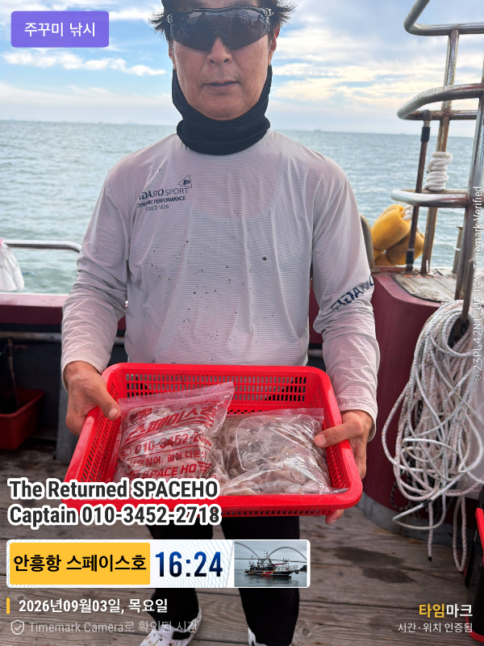
사진 5장스페이스호 9월3일 쭈꾸미낚시 조황 지퍼백 수량이 늘어나기 시작했습니다*** 안흥 스페이스호 예약 안내 ***예약문의 : 010-3452-2718오시는길 : 충남 태안군 근흥면 안흥1길 32홈페이지 : https://spaceho.sunsang24.c
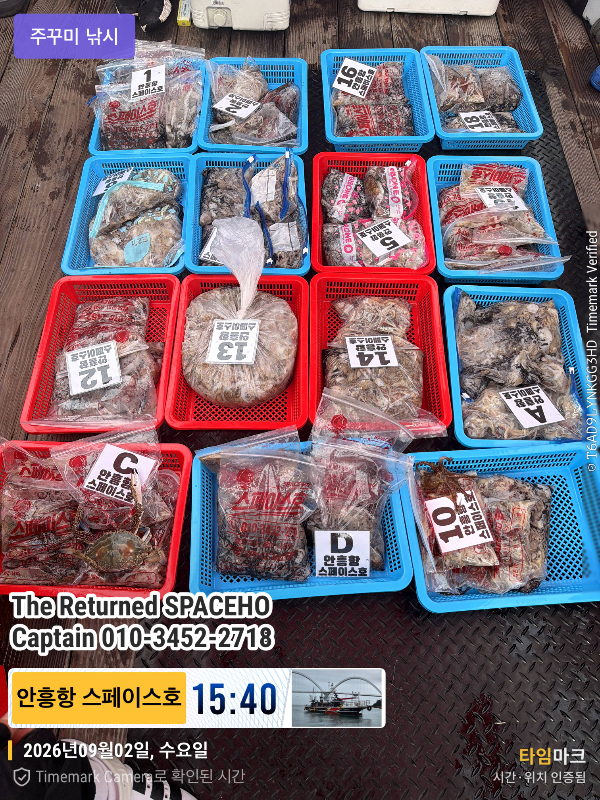
사진 5장스페이스호 9월2일 주꾸미낚시 조황 조금더 살아나는 조황*** 안흥 스페이스호 예약 안내 ***예약문의 : 010-3452-2718오시는길 : 충남 태안군 근흥면 안흥1길 32홈페이지 : https://spaceho.sunsang24.com/ 안흥 스
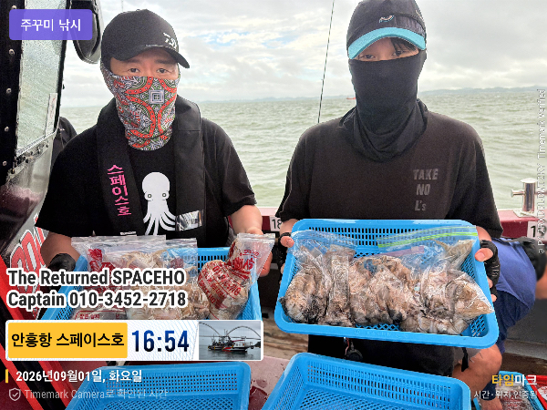
사진 5장9월1일 주꾸미 조황 입니다 9월1일 조황 입니다 *** 안흥 스페이스호 예약 안내 ***예약문의 : 010-3452-2718오시는길 : 충남 태안군 근흥면 안흥1길 32홈페이지 : https://spaceho.sunsang24.com/ 안흥 스페이스
 사진 12장
사진 12장
11/5 [군산 뚱스호]_갑오징어 종일반 조황 11/5 [군산 뚱스호]_갑오징어 종일반 조황 안녕하십니까..11월 5일 갑오징어종일반 조황입니다출항전부터 오는 비부터 시작하여너울도 오후에는 메다급이다보니낚시하기 좀 많이 불편하였지만그래도 조사님들은 하
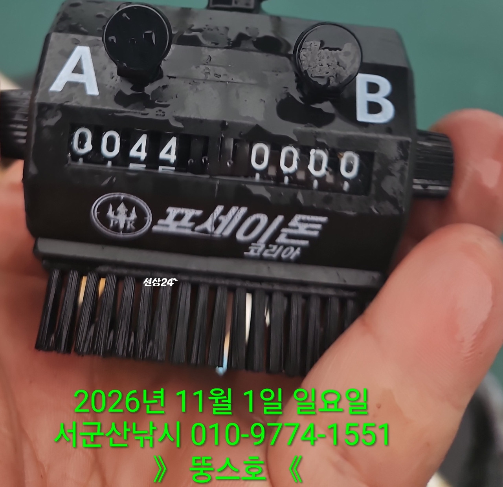
사진 6장11/1 [군산 뚱스호]_갑오징어 종일반 조황 11/1 [군산 뚱스호]_갑오징어 종일반 조황 안녕하십니까..11월 1일 갑오징어종일반 조황입니다쩝..너울 없다했는데 있네요바람도 잦아들며 너울도 약해졌지만다시바람도불고 비도 좀 오고너울도 커지고갑이는 따
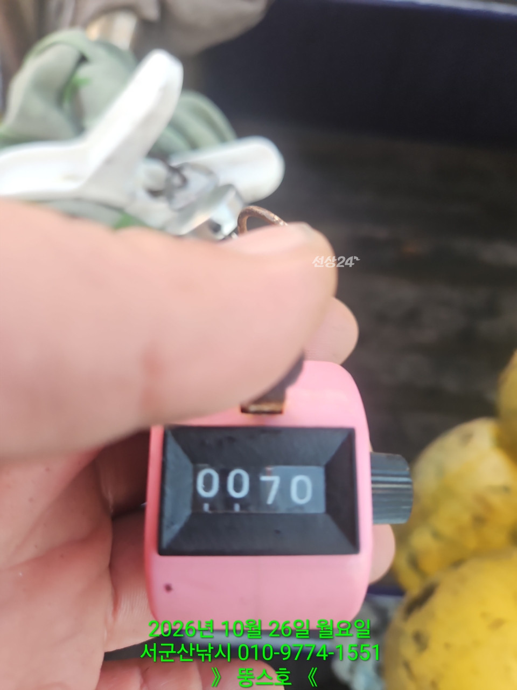
사진 13장10/26 [군산 뚱스호]_갑오징어 종일반 조황 10/26 [군산 뚱스호]_갑오징어 종일반 조황 안녕하십니까..10월 26일 갑오징어종일반 조황입니다기상이 안좋아 걱정했는데다행히 오전에만 안좋아여기저기 찍으며 헤메고 다니며쬐끔씩 잡다가 오후부터는 하나
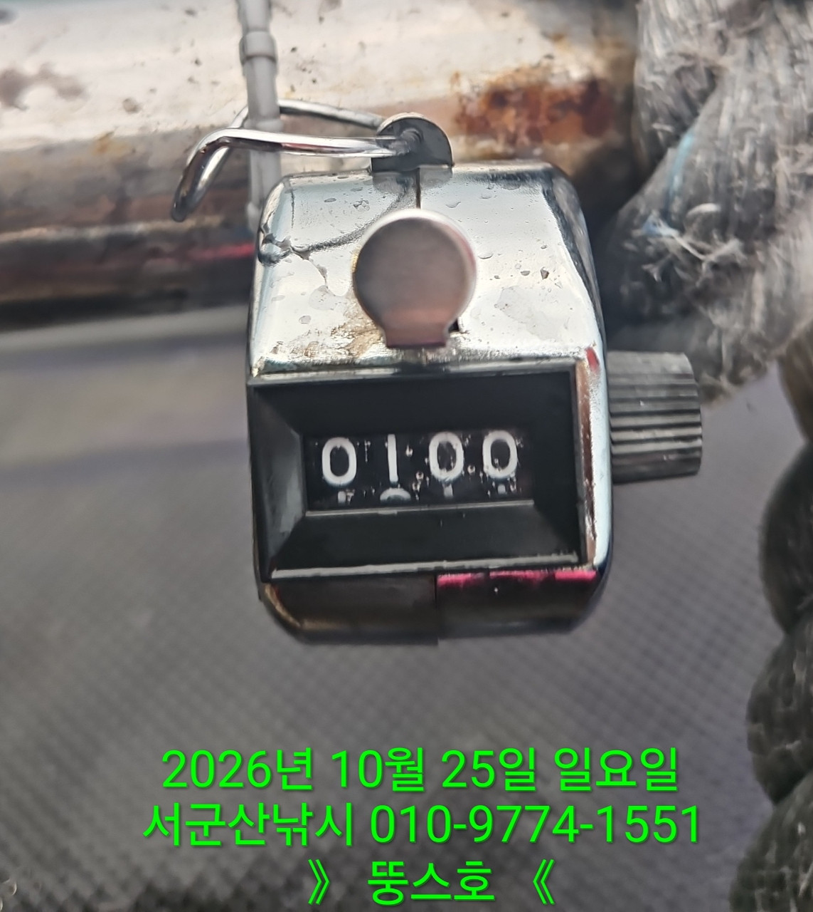
사진 12장10/25 [군산 뚱스호]_갑오징어 종일반 조황 10/25 [군산 뚱스호]_갑오징어 종일반 조황 안녕하십니까..10월 25일 갑오징어종일반 조황입니다어제의 그느낌이 아니다보니더 어려운 상황으로 판단되어여기저기 찍어보면서 하나둘잡아보았는데 배 진행방향으
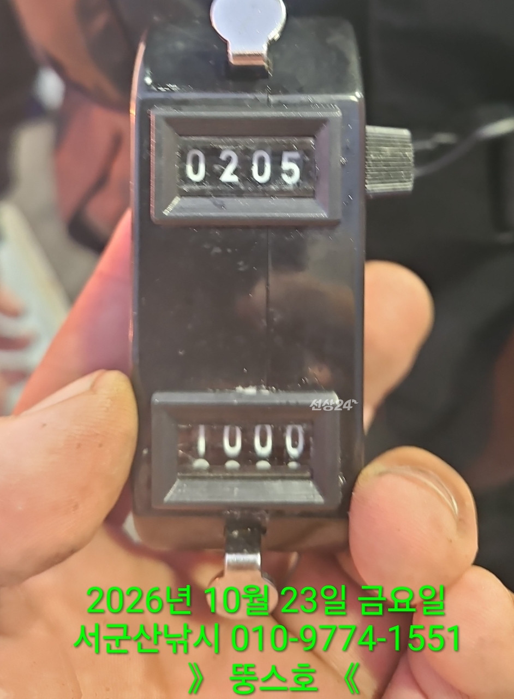
사진 11장10/23 [군산 뚱스호]_갑오징어 종일반 조황 10/23 [군산 뚱스호]_갑오징어 종일반 조황' 안녕하십니까..10월 23일 갑오징어종일반 조황입니다조사님들이 미쳤어유갑오징어가 미쳤어유오늘 활성도가 장난이아니네요있으면 랜딩중..저번에 세운 기록 오늘